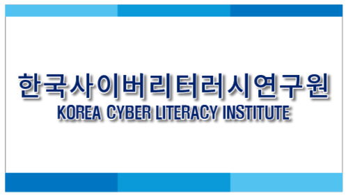
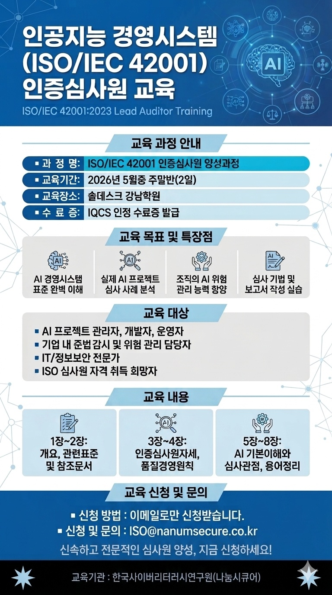

ISO 교육·심사
ISO 42001을 비롯한 국제표준 인증심사원 양성교육과 인증심사 전문역량을 제공합니다.
EDUCATION & AUDITKorea Cyber Literacy Institute
ISO 국제인증 심사원 교육과 지식·플랫폼 기술을 연결해 조직의 AI 거버넌스와 디지털 역량을 강화합니다.
국제표준의 언어를
현장의 실행 역량으로
전환합니다.
About KCLI
한국사이버리터러시연구원은 4차 산업혁명 시대에 필요한 지식관리, ISO 인증심사원 교육·심사, 플랫폼 관리 소프트웨어 역량을 함께 발전시킵니다.

Core Business
전문가 양성과 조직의 표준 대응, 디지털 지식의 실제 적용을 하나의 역량 체계로 연결합니다.
ISO 42001을 비롯한 국제표준 인증심사원 양성교육과 인증심사 전문역량을 제공합니다.
EDUCATION & AUDITAI 경영시스템의 요구사항과 위험관리, 거버넌스를 이해하고 책임 있게 적용하도록 돕습니다.
AI GOVERNANCE지식산업센터 관리 소프트웨어와 지식기반 정보 공유·아카데미 사업을 추진합니다.
PLATFORM & KNOWLEDGEProfessional Education
AI 경영시스템 표준의 완전한 이해부터 실제 프로젝트 사례, 심사 기법과 보고서 작성까지 연결하는 실전형 전문가 과정입니다.

ISO/IEC 42001:2023 LEAD AUDITOR TRAINING
표준 요구사항을 체계적으로 해설하고, 사례 기반 워크숍과 필기평가를 통해 현장 적용력을 높입니다.
교육 문의 →ISO/IEC 42001의 목적과 구조, 연계 표준 및 핵심 참조체계를 이해합니다.
01인증심사 프로세스와 판정 포인트, 심사 수행의 기본 원칙을 학습합니다.
02AI 시스템의 특성과 위험을 심사 관점으로 분석하고 보고서 작성까지 실습합니다.
03Training Records
제1회 ISO/IEC 42001 인증심사원 교육과정의 운영 결과와 제공 자료를 확인할 수 있습니다.
IQCS Designation
제공된 IQCS 지정서에는 한국사이버리터러시연구원이 ISO 9001·14001·45001·27001·27701·22301·42001 및 ESG Auditor 교육·시험 수행기관으로 기재되어 있습니다.
Connect with KCLI
서울특별시 금천구 디지털로 178, 가산 퍼블릭 A동 1031호